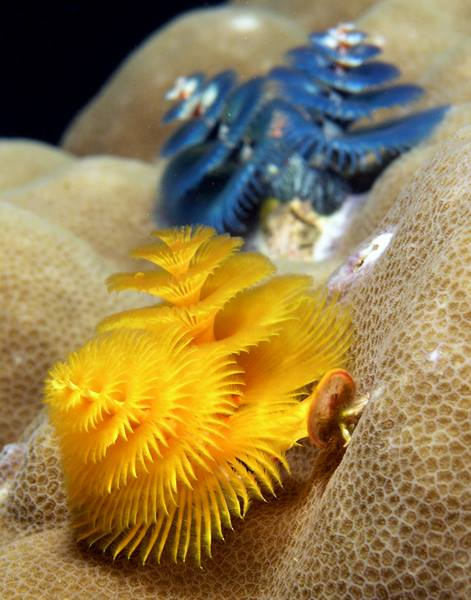

Αρχείο · Επιστημονική επικοινωνία στα ελληνικά
Το Christmas Tree Worm και τα 35 Φύλα των ζώων
Μια σύντομη γνωριμία με την ποικιλία των ζωικών Φύλων μέσα από τον πολύχαιτο Spirobranchus giganteus.

Αρχικό κείμενο
Στην εικόνα ο πολύχαιτος Spirobranchus giganteus, γνωστός και ως Christmas Tree Worm.
Aνηκει στους Δακτυλιοσκώληκες μια από τις 35 περίπου κατηγορίες ζώων που ονομάζουμε Φύλα.
Τα περισσότερα ζώα που παίζει να συναντήσεις στη ζωή σου ανήκουν στα Μαλάκια, στα Αρθρόποδα και στα Χορδωτά (αυτά που έχουν Νωτιαία Χορδή, δηλαδή τα περισσότερα ζώα με σπονδυλική στήλη).
Τα υπολοιπα 30+ βάλε Φύλα δεν θυμίζουν κανένα άλλο ζώο στον πλανήτη, για αυτό και ανήκουν σε τελείως διαφορετικές ταξινομικές ομάδες.
Οι ταινίες Alien έχουν πολύ μεγαλύτερο υλικό για να εμπνευστούν περίεργα όντα εκτός από εξωσκελετούς και πολλά πόδια.
Τσέκαρε: http://www.bbc.com/.../20150325-all-animal-life-in-35-photos
#WorldAnimalDay